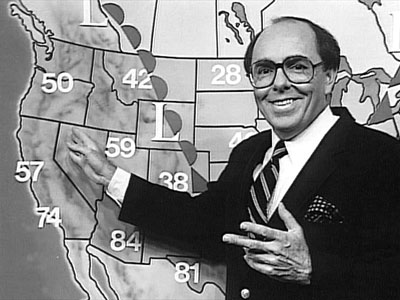
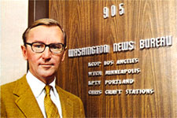

|
|
|
|
|
|
|
KPTV News Archive - News From Past Years
KPTV EMPLOYEES
|
Friday
May
13,
2005 Wednesday
May
18,
6:00-10:00pm If more information is needed, you can call: DIANE JETTY AT PRO-GROUP REALTY: (503) 357-9514, ext. 312. Also, for friends or callers who would like to send a note of condolence to David’s family, you can send it to David’s office: Founder’s
Mortgage
Group David’s boss, Ron Dickinson will forward the mail to David’s wife, Patty. David’s body was cremated on Thursday. At this time, there are no plans by the family to have a public funeral service. Tuesday
May
10,
2005 Some very sad news for the KPTV family. David Apple, weatherman for "The 10 O'Clock News" from 1983-85 and again from 1992-98, died suddenly of a heart attack, at his office earlier today. He had been sitting at his desk when co-workers noticed he was in distress. Despite efforts to administer CPR by his co-workers, and the arrival of paramedics, David was pronounced dead before he could be taken to a hospital. We are all in shock at this sudden, unexpected event. Anyone who had the opportunity to know David, knew what a kind and generous man he was. His love of weather was topped only by his love for his family and his friends. We in his KPTV family will miss him tremendously. Our condolences go out to his wife and family, and his many, many friends. Saturday,
May
07,
2005
If
you
would
like
to
send
a
note
of
condolence
to
Margo's
husband
Gary,
and
their
children
Rachel
and
Charlie,
you
can
send
it
to
this
address: A celebration of Margo's life was held on Sunday May 1st, with many of her KPTV family in attendance. Click here to see pictures from our April 2005 reunion: /employees/party/0504/0504Party.html Margo Edna Chambers Margo Edna Chambers died April 29, 2005, at age 52. Margo Salas was born Sept. 28, 1952, in San Diego. She lived in Tacoma in the early 1970s and moved from San Diego to Portland in 1975. She was a media buyer for KPTV (12). In 1970, she married Gary. Survivors include her husband; daughter, Rachel E.; and son, Charles W. Remembrances to Clackamas County Dog Control. Arrangements by Crown Monday,
April
04,
2005 Mr. Chisholm was born Feb. 13, 1929, in Seattle. He later lived in Half Moon Bay, Calif., and Medford before moving to Portland in 1961. He worked for KPTV for 32 years, retiring as local sales manager. In 1948, he married Gerry Nunes; they divorced. In 1978, he married Sandy Wing; she died in 2003. Survivors include his son, Bruce; daughters, Cathy and Joan; stepsons, Steve Sedillo and Ron Sedillo; and seven grandchildren. Remembrances to the Oregon Humane Society. Arrangements by Neptune.
January
7,
2005 Here's the latest KPTV alumni news, courtesy of Lori Jensen:
Wayne
Buttice
has survived
his first
political
season
at
KATU and
is
glad
we
don't
have
them
every
year.
Val
Roberts and
his
wife
Rosalie are
settled
and
enjoying
their new
retirement
home they built
in
2002
(out
in
the
boonies).
They
are
staying
active
with
their
family,
church
and
community
and
Val
is
helping
out
a
neighbor
with
some
farming
duties!
He
is a
board
member
of
a
Foundation
that
is
restoring
an
old
pioneer
townsite
too. Barbara,
Chris
&
their
two
children
Samantha
(6)
&
Hayden
(3)
are
still
in
Little
Rock
AK.
She
is
a
Morning
&
Noon
time
Anchor.
Chris
is
planning
on
going
back
to
school.
Phil
Cassidy
is
busy
with
his
new
venture Shoot
My
Video
(
www.shootmyvideo.com) and
it's
basketball
city
at
his
house
with
two
boys
in
four
different
leagues!Shoot
My
Video
keeps
Phil
busy
producing three-to-five
minute
mission
statements
allowing companies
to
tell
its
story
and
how
they
can
partner with
potential
clients. Please
pass
along
the
word
if
you
know
anyone
who has
a
business
or
an
event
and
needs
promotional
work
done. Phil
says
"We're
very
affordable,
work
fast,
and
produce
quality,
thanks
to
20
years
in
T-V
news."
Jeanette
Holt
and
her
husband
Gary have
been
enjoying
the
Oregon
coast and
hope
to
do
more
traveling this
year. They are
both
doing
well
and
enjoying
retirement
and
being
free
to
do
what
they want.
Melanie
Fernandez
has
been
busy
with
providing
sales
training
in
six
markets for
Raycom Media.
They
own
42
TV
stations
based
in
the
south
so
Melanie
speaks
their language!
Bob
Dickey (KGUN
in
Tucson,
AZ)
has
been
keeping
company
with
alum's
Sue
and
Hunt
Decker
while John
"Lash"
Larue and
his
wife were
in
town.
Bob
said
that much
ole
KPTV
trivia
was
discussed...hmmmm....imagine
that!
David
Apple is
keeping
company
with
alums
Gary
Hill,
Dave
Thompson,
George
Stephan
& Phil
Cassidy
plotting
the
next Portland
metro snow
storm! [NOTE: David Apple passed away on May 10,
2005. See article above for details.]
Steve
Mansker
is
busy at
KATU operating
the
SAT and
microwave trucks
for
News.
David
Berger
is
enjoying
Seattle
working
for
Nordstrom
and
living
in
the
Magnolia
neighborhood.
He
still
maintains
his
Portland
clientele
as
well
so
let
him
know
if
you
need
any
help.
Rosalie
Drake
and
Shari
Busse
are
holding
down
the
fort at KASA
TV
in
Albuquerque,
NM
and
hope
to
make
our
next
alumni
event.
Roger
Forrest
is
enjoying
his
retirement
and staying
busy
with
his
wood
shop
projects.
John
Lawrence
will
soon
chalk
up
his
5th
anniversary
with
KOIN
TV
sales...my
how
time
flies!
Mary
Samp
and
her
husband
Dennis
are
still
living
in
Newberg
and
she's
working
for Touchmark
Living
Centers,
Inc.
in
Beaverton
and has
been there
for
over
2
years
now
and
loves her
job.
Nancy
Soeterik
and
her
fiance
Blane just
purchased
their first
home
in
Vancouver
and moved
in
a
week
before
Christmas.
They
haven't set
their wedding
date
yet.
June
15,
2004 Bill Swing, a Portland broadcast and news journalist who bracketed a long career in journalism with stints as news director at KPTV (12), died June 10, 2004, at 78 at his Portland home.
Mr. Swing was born Jan. 1, 1926, and grew up in New York City. He served in the Marine Corps during World War II, graduated from Reed College and was hired in 1952 as the first director of KPTV's fledgling news department. From KPTV, Mr. Swing moved on to The Oregonian as a staff writer from 1957 to 1967; he was also a stringer for The New York Times and the National Observer. He then spent two years as executive aide to Sen. Mark O. Hatfield, R-Ore. In the 1960s, Mr. Swing opened the first television news bureau in Washington, D.C. for Chris Craft Industries Inc. The bureau, with Mr. Swing as lead reporter, supplied footage and stories from the White House, Congress, the Supreme Court and the United Nations to a group of television stations around the country. Returning to Portland, Mr. Swing was an editor and reporter at KATU (2) for four years before returning to KPTV in 1977. A longtime rare book sleuth, after his retirement in 1991, Mr. Swing opened a small downtown Portland store called Bill Swing Rare and Fine Books, at 917 S.W. Oak St. There he indulged his unabashed enthusiasm for modern American first editions. Mr. Swing married Yvonne Hauser in 1947 and they had eight children. They divorced in 1974. He is survived by daughters, Yvonne Wenger, Rebecca Swing, Liza Larkin, Sally Swing, Kate Coughlin and Joan Hayter; sons Mark and Peter; 17 grandchildren; two great-grandchildren; and two sisters, Sigrid Bengeyfield and Malan Strong. A memorial service is scheduled for 1 p.m., Monday, June 21, at Finley-Sunset Hills. Private burial will be in Willamette National Cemetery. Remembrances may be sent to Cedar Mill Community Library. AMY
MARTINEZ
STARKE/THE
OREGONIAN
|
|
January
1,
2004 After
talking
to
a
few
folks,
I
have
been
so
fortunate
to
have
kept
in
touch
with
quite
a
few
of
you,
that
I
thought
I'd
give
everyone
a quick
update
of
a
few
of
our
KPTV
alum.
Our deepest sympathies to Jeff Gustin's family for the loss of his father after a long battle with cancer on December 3rd. You
can
now
find
Wayne
Buttice
(programming
assistant) sales
assisting at
KATU
after
a
wonderful
trip
to
Italy
this
summer. We've
now
got
a
place
to
crash
for
the
Pendleton
Round
Up! Bruno
Rudolph
(promotions
manager) is
calling Pendleton
home
and
is the
Advertising
Manager
at
the
Wildhorse
Resort
and
Casino.
You
can
now
find
Chris
and
Barbara
Roberts
in
Little
Rock
AK. Barbara
is
News
Anchor
for
KARK and
Chris
is
at KLTR
assisting
them
with
the
start
of
their
first
live
newscast. David
Berger (sales
assistant)
is
now
Via
C
manager
at
Nordstrom's
downtown
Seattle
and lives
in
the
beautiful Magnolia
neighborhood.
Another
former
KPTV
sales
assistant,
Mary
Byun,
has
relocated
to
Seattle
as
well.
Mary
started
with
the
Portland TeleRep
in
2000
as
an
account
executive
and
is
enjoying
her
new
digs
in
Queen
Anne
and
office
in
downtown
Seattle. Karen
Hansen (account
manager)
has left KATU
for Comcast
and
will
is
their
Local
Sales
Manager. Marvin Rhodes (programming manager) is off to the Windy City. He is the VP of Broadcasting for Total Living Network in Chicago. Their new HDTV facility includes 60,000 square feet filled top to bottom with four HDTV studio cameras, HDTV switchers, tape machines, HDTV field cameras and, of course, our Marvin Rhodes. Congratulations Marvin we will miss you!
Eric Behny, (account manager) now with KBPS, and Linda Behny are awaiting the joyful arrival of their third little one due Feb 20th.
Speaking of babies, Adam and Amber Beebe welcomed their second son, Luke, last July and are now making their home in Bend.
Mike Curtain (IT guru) has left KPTV to concentrate full time on his business Inday MultiMedia Products which offers affordable products for broadcast,. industry, and home theater. Check them out at www.inday.com.
You
will
now
find
Mitch
Stedman (former
engineer) at
Vic Alfonso
Cadillac. Nora
Altstock (sales
assistant)
and
her
husband
Bob
have
moved
on
to
greener
pastures....1630
W
Calle
Del
Grajo,
As
for
me....
Yep, enough is enough, the gutters are clean so it's time to get back to the 9 to 5 world. I will be the administrative assistant extraordinaire at Staples new regional sales office effective 12/29. It’s been an amazing year, lots of traveling, working around the house, working for Coca-Cola, catching up with family and friends etc. Thank you for all your support (and distractions...it’s been fun)! May you all continue to find the success and happiness you deserve!
Lori
Jensen
September 29, 2003 The following obituary appears in the obituary section of The Sacramento Bee website. ROBERTSON,
ROSALYN CLAUDETTE
September 6, 2003 This message was sent to Yesterday's KPTV from Sue Goldsberry (and forwarded by Christine Purvis). At present, Yesterday's KPTV is unable to find any details on the internet: I have some very sad news to
report about a former KPTV friend and employee, Roz Robertson. Condolences may be sent
to her Mother, Ida Swope, 6910 Stoneman Drive, North Highlands, CA 95660. September 3, 2003 Mitch Stedman has joined Vic Alfonso Cadillac in sales and is starting an automotive Broker business to get other brands of cars for people. If you're in the market for an auto, give Mitch a holler!
September 1, 2003
Congratulations Phil and best wishes in your new gig. You're one of a kind. KPAM is lucky to get you! August 14, 2003 The Lars Larson Show will broadcast from flagship station KXL-AM Portland and will feature Larson tackling topics and issues on the minds of Americans with his strong opinions and insight. The Lars Larson Show will include compelling interviews with special guests and caller interaction with listeners across the country. READ
THE ENTIRE PRESS RELEASE HERE: June 5, 2003 I hate to start off with the "good news, bad news" cliche, but it's appropriate. I've accepted the Managing Editor job at KGUN in Tucson, AZ and that's very good news indeed. I've been out of work much too long. It's particularly good news because my sister Liz lives in Tucson and it will be the first time in 3 decades that we'll share the same area code. The bad news is having to leave Portland and the wonderful Northwest. We have many good friends here and thirteen years of great memories. We have grown very attached to our adopted "home." We will miss the big trees, beautiful mountains and lush greenery. Thanks to everyone for the good thoughts and kind prayers. We'll let y'all know more when we figure out the details. Bob May 30, 2003 Congratulations to Craig Miller, who has signed-on as KATU's Marketing Director. Craig will have the task of branding channel 2 in the months and years ahead. Good Luck, Craig.
|
| May
5,
2003 Congratulations to Mitch Stedman who has accepted an offer of employment from Herzog-Meier in Beaverton. He will be selling Volvo automobiles for them. Another example of a great company snatching up a terrific former KPTV employee. He's very excited about his new opportunity and invites all KPTVers to come out and see him. May
1,
2003
March 26, 2003 A funeral was held at 11 a.m. Wednesday, March 26, 2003, in St. Philip the Deacon Episcopal Church in Portland for Gertrude Mae Rae, who died March 20 at age 74. Gertrude Mae Williams was born April 13, 1928, in Saskatchewan. She moved to Portland and graduated from Jefferson High School. She was assistant to the director for the Urban League of Portland and later a personnel office manager for KPTV. She was a vestry member of the church as well as a lay Eucharistic minister and lay catechist. In 1948, she married Arvoll. Survivors include her husband; daughter, Dr. Anita Walton; son, Darryl R; brothers, Emmitt Holmes, Sampson Holmes and Samuel Holmes; and four grandchildren. Remembrances to the Arthritis Foundation. Arrangements by Caldwell's Colonial.
March 13, 2003 You can contact Steve at pdxtvguy@aol.com
March 5, 2003 Nora's e-mail address is nealiz@worldnet.att.net March 5, 2003 Note: WOFL and WRBW is the
duopoly created when Fox traded KPTV to Meredith Corp. in June 2002.
|
|
NEWS March 5, 2003
|

This page last updated on August 17, 2025
|
Yesterday's KPTV Website design and content ©2003-2025 by Ron Dunevant, LLC unless otherwise noted. |
 Our
dear
friend,
Margo
Chambers,
died
on
Friday
April
29,
after
a
valiant
battle
against
cancer.
Margo
worked
at
KPTV
from
the
late
1970s
through
the
early
1990s,
later
as
assistant
to
Bud
Chisholm.
Although
ill,
Margo
attended
our
KPTV
reunion
on
April
2nd
at
The
Kingston.
Her
efforts
allowed
many
of
her
friends
to
see
her
again
after
several
years.
She
was
cheerful,
funny
and
very
loving
at
our
gathering.
We
all
appreciate
that
she
gave
us
the
opportunity
to
see
her
one
last
time.
Below
is
the
obituary
from
The
Oregonian.
Our
dear
friend,
Margo
Chambers,
died
on
Friday
April
29,
after
a
valiant
battle
against
cancer.
Margo
worked
at
KPTV
from
the
late
1970s
through
the
early
1990s,
later
as
assistant
to
Bud
Chisholm.
Although
ill,
Margo
attended
our
KPTV
reunion
on
April
2nd
at
The
Kingston.
Her
efforts
allowed
many
of
her
friends
to
see
her
again
after
several
years.
She
was
cheerful,
funny
and
very
loving
at
our
gathering.
We
all
appreciate
that
she
gave
us
the
opportunity
to
see
her
one
last
time.
Below
is
the
obituary
from
The
Oregonian. He
retired
from
KPTV
in
1991
after
14
years
as
news
director,
a
tenure
remarkable
in
length
in
the
television
business.
During
his
years
there
KPTV
won
an
array
of
awards.
He
retired
from
KPTV
in
1991
after
14
years
as
news
director,
a
tenure
remarkable
in
length
in
the
television
business.
During
his
years
there
KPTV
won
an
array
of
awards. The
enormously talented and frequently hilarious Phil Cassidy has sent wonderful
news to Yesterday's KPTV.
The
enormously talented and frequently hilarious Phil Cassidy has sent wonderful
news to Yesterday's KPTV.